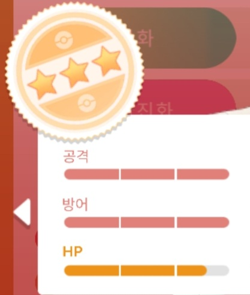
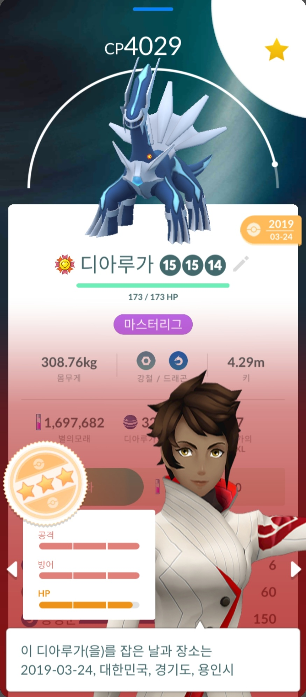

이제 우리는 지금까지 개체값을 보는 방법을 배웠습니다. 앞의 내용을 숙지하셨다면,
이제 누구나 고개체인지를 판단하고 이를 양육할 수 있습니다.
하지만 여러 사람들이 하는 실수가 있습니다. PVP용 포켓몬도 무조건 높은 개체를 사용하는 것이죠
포켓몬고에서는 레이드용 개체와 PVP 개체가 구분됩니다.
이번 시간에는 이를 알아봅시다
레이드용 포켓몬은 앞에서 배운 고개체를 가진 포켓몬을 양육하시면 됩니다.
왜냐하면, 포켓몬이 지닌 능력치를 한계로 끌어올리려면 가장 높은 개체가 필요하겠죠?
즉, 레이드용 포켓몬을 키울 때는 고개체를 키우시면 됩니다.

(ex : 대표적으로 사용되는 고개체 예시)
우선 PVP 개체 또한 크게 2가지로 나뉩니다.
슈퍼리그 / 하이퍼리그 개체와 마스터리그 개체
이렇게 두가지를 설명드리겠습니다.
마스터리그를 먼저 설명드리겠습니다.
마스터리그는 우리가 알고 있는 고개체를 사용하면 됩니다.
공격 개체 15짜리 포켓몬 양육을 추천드립니다.
(공격 15인 이유는 공격 우선권과 관련있습니다. 우선권에 대해서는 따로 설명 안드리겠습니다.)

사진에 있는 포켓몬은 마스터리그에서 주로 사용되는 디아루가입니다.
보시는 것처럼 공격 개체가 높은 98% 개체를 사용 중입니다.
마스터리그에서는 CP 제한이 없기 때문에 사용 포켓몬의 능력을 최대로 끌어 올려야하죠.
따라서, 고개체를 사용해야 하는 것입니다.
자, 그럼 많고 복잡한 내용을 다뤘으니깐 요약을 해볼까요/
1. 마스터리그는 공격개체가 15인 96% 고개체가 쓰인다.
2. 슈퍼리그와 하이퍼리그는 공격개체가 낮고 방어, 체력 개체가 높아야합니다.